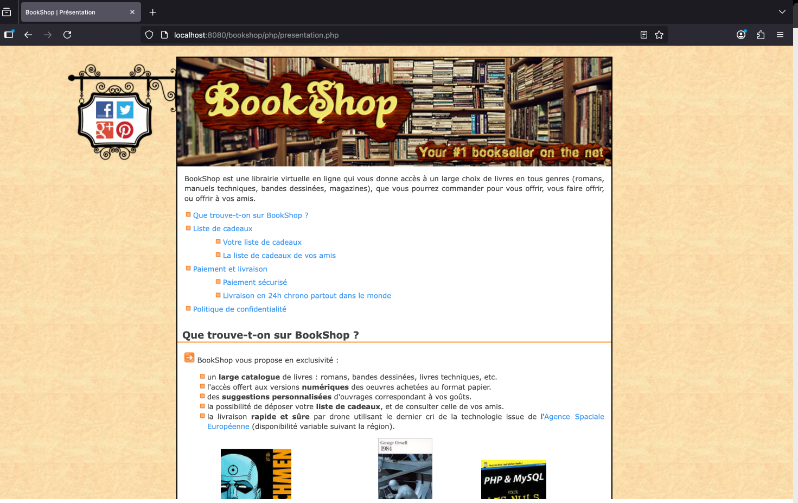

Bookshop est un site web développé pour gérer une librairie en ligne avec une base de données locale. Le projet permettait aux utilisateurs de s'inscrire, se connecter, rechercher des livres, ajouter des articles au panier et passer des commandes. Il gérait également l'historique des commandes et facilitait la navigation dans le catalogue.

Si vous voulez voir le code, veuillez cliquer ici pour télécharger le dossier :
Télécharger le projet